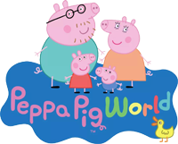
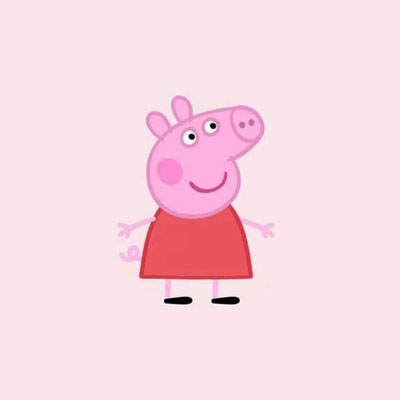
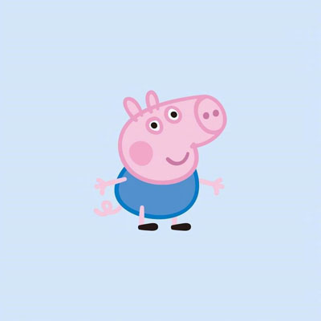

小猪佩奇(PeppaPig)
小猪佩奇是一个可爱的小猪。她已经四岁了，与她的妈妈、爸爸和弟弟乔治生活在一起。佩奇最喜欢做的事情是玩游戏，把自己打扮得漂漂亮亮的，去度假，以及在泥坑里快乐的跳上跳下，与小羊苏西（她最好的朋友）乔治（她的弟弟）一起玩儿，拜访她的姥姥（猪妈妈的妈妈）、姥爷（猪妈妈的爸爸）、伯父伯母。故事内容多数环绕日常生活，比如小孩子们参加学前游戏小组（playgroup）、探访姥姥姥爷和叔伯亲在游乐场游玩、踏单车等等...
小猪佩奇

佩奇是一只非常可爱的小猪，她和她的妈妈、爸爸以及弟弟乔治生活在一起。她和弟弟一样很喜欢恐龙，尤其是马门溪龙。她和弟弟一样很喜欢恐龙，尤其是马门溪龙。她和弟弟一样很喜欢恐龙，尤其是马门溪龙。她和弟弟一样很喜欢恐龙，尤其是马门溪龙。她最喜欢跳泥坑，最喜欢吃的是意大利面和巧克力蛋糕，最喜欢扮成小仙女公主，最喜欢喝橙汁，很喜欢去拜访她的姥姥爷爷和到伯父伯母家玩。
小猪乔治

佩奇的弟弟，已经上幼儿园了。性格非常像现实中的小男孩，活泼调皮，喜欢吃意大利面和巧克力蛋糕，喜欢喝果汁，最最喜欢的是恐龙，喜欢吃意大利面和巧克力蛋糕，喜欢喝果汁，最最喜欢的是恐龙，喜欢吃意大利面和巧克力蛋糕，喜欢喝果汁，最最喜欢的是恐龙，喜欢吃意大利面和巧克力蛋糕，最最喜欢的是恐龙，自己有个恐龙玩具，无论是谁问他问题，他总回答“恐龙！”尤其是马门溪龙。最喜欢跳泥坑。